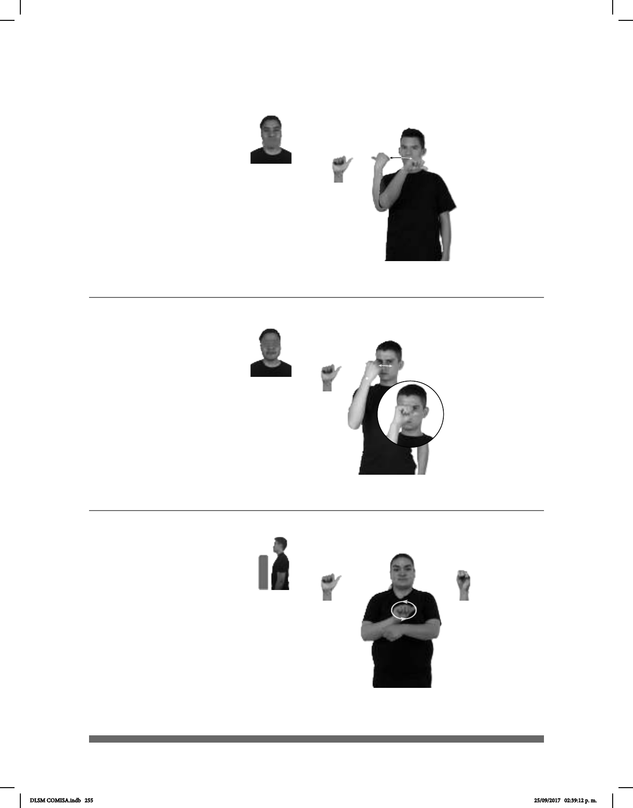

255
(A-68)
(A-67)
AUSTRÍA pos-SU PAÍS HERMOSO
Austria es un país hermoso.
MI VECINO+MUJER pos-SU HIJO+MUJER TENER AUTISMO
La hija de mi vecina tiene autismo.
(A-69)
AUTO NUEVO pos-MI CUÑADO YA COMPRAR YA
Mi cuñado se compró un auto nuevo.
Seña: SM
A.1
Palma hacia la
izquierda.
A la altura de la boca.
La mano se agita de
izquierda a derecha.
País del este de Europa
cuya capital es Viena.
Seña: SM
A.1
La palma inicia hacia
adentro y termina hacia la izquierda.
A la altura de los ojos.
El antebrazo gira y
cambia la orientación de la mano
repetidamente.
sust. m. Trastorno del
desarrollo que afecta a la comunicación
y a la interacción social caracterizado
por patrones de comportamiento
restringidos, repetitivos y
estereotipados.
Seña: SB
MD A.1, MB S.1
MD palma hacia afuera. MB
palma hacia adentro.
A la altura del pecho. MD sobre
MB.
MD recto hacia la izquierda
repetidamente.
Simula la acción de
conducir un auto agarrando el volante.
sust. m. Vehículo con
motor de combustión interna que se
desplaza sobre ruedas o llantas de hule y
que, generalmente, utiliza gasolina como
combustible; puede transportar hasta cinco o
seis pasajeros; auto, coche, carro.
DLSM COMISA.indb 255 25/09/2017 02:39:12 p. m.